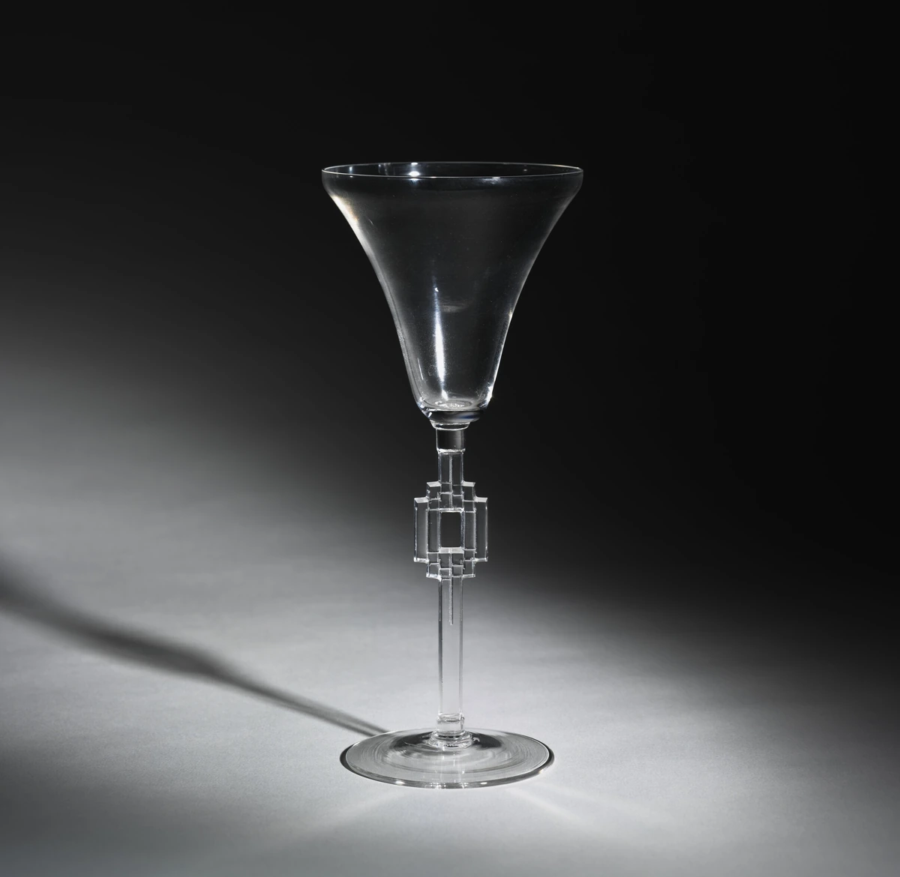
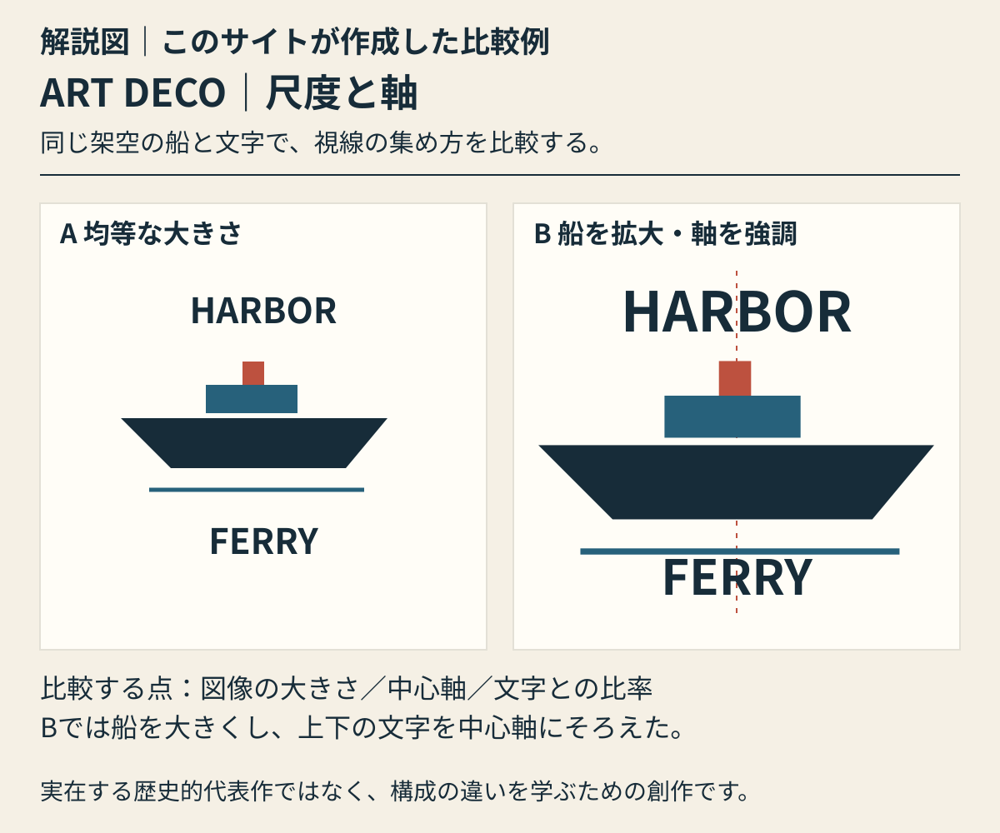

直線を、軸の中心に集める。
細い軸の中央で矩形の枠が重なり、上下に小さな段差を作っています。器全体に模様を広げず、輪郭の明瞭な幾何学的装飾を一点に集中させています。
本文試作・実作品画像1点収録 / 代表画像セットは整備中 · 2026-11-01
様式
アール・デコ
LOOK AT THE WORK / 実作品を見る

画像を表示できませんでした。下の所蔵元リンクから作品を確認できます。
ART DECO / GLASS · 1925年
René Lalique（ルネ・ラリック） / The Cleveland Museum of Art
Cleveland所蔵2012.136の全体写真1点。制作年は1925年、高さ18.3cm、径7.8cm。自動車用マスコット《Spirit of the Wind》とは別作品です。製品のモデル名は未確認です。
細い軸の中央で矩形の枠が重なり、上下に小さな段差を作っています。器全体に模様を広げず、輪郭の明瞭な幾何学的装飾を一点に集中させています。
上のボウルは口へ向かって広がり、下の脚は円形です。その間に角張った装飾を挟むことで、曲面・直線・円の違いが際立ちます。Art Decoを直線だけの様式とは見なさないための比較例です。
無色のガラスは輪郭と稜線の反射で形が見えます。黒い背景と左へ伸びる影は撮影条件によるものです。モデル名や製法は写真から推定せず、所蔵記録のガラスという表記に留めます。
形の説明は掲載写真の観察、作者・年代・素材はClevelandの個別記録に基づきます。V&Aの1920年代のLaliqueガラスとArt Decoの解説を背景に、段状の幾何学的装飾を読む例として選定しました。Clevelandによる個別作品の様式分類を引用したものではありません。
René Lalique, Wine Glass, 1925. Cleveland Museum of Art, Bequest of Dr. Paul J. Vignos Jr., 2012.136. CC0.
所蔵元の個別作品記録 ↗所蔵番号2012.136。原作品：館の個別Open Access対象。写真：公式APIの個別CC0指定。確認日 2026-11-01。
公式配信の原JPEGは無加工で保持し、拡大リンクから取得できます。ページ表示には縦横比と全画面を保った縮小WebPを使用（切り抜き・色補正なし）。原JPEGと各表示画像のサイズ・SHA-256を権利台帳に別記録。撮影者名は未確認のため推定しません。
美術館のOpen Access方針 / CC0 1.0 / 収録画像の権利台帳
所蔵館の個別公開指定とCC0方針に基づきます。全法域の権利保証や美術館の推奨を意味しません。
飾る楽しさを、新しい暮らしや産業、ものを買って楽しむ文化と結びつけたのがアール・デコです。一つの形に決まった様式ではありません。高級な工芸品と工場でたくさんつくる製品の両方に見られ、建築、ファッション、広告にも広がりました。
国際博覧会（こくさいはくらんかい。各国の製品や技術などを紹介する大きな催し）、都市の発展、旅行、映画とのつながりを見ます。1925年の博覧会だけが、すべての始まりだったわけではありません。その前後に、どんな展開があったかも確かめます。
以下は観察のための問いです。すべての作品に共通する固定ルールや、未取得画像の実見結果ではありません。
黒と金だけが特徴ではありません。はっきり違う色の組み合わせや、材料のつやにも注目します。
円や四角などの図形をもとにした文字や、飾りのある文字を探します。縦に細長い文字や、強く目を引く見出しも手がかりです。
階段のような形、中心から外へ広がる形、ジグザグを探します。人や機械を単純な形にまとめた表現にも注目します。
左右などの形が対応する対称性（たいしょうせい）、縦へ伸びる感じ、視線が集まる場所を見ます。斜めの線が速さを感じさせる例もあります。ただし、どの作品にも当てはまるとは限らないので、一点ずつ確かめます。
ORIGINAL EXPLAINER · 自作解説図
同じ架空の船とHARBOR／FERRYの文字を二案で比較。Aは均等な大きさ、Bは船を拡大し、図と文字の中心軸を強調。
実在する代表作の画像ではありません。見るポイントを学ぶために、このサイトが作った例です。

解説図｜このサイトが作成した比較例。同じ架空の船とHARBOR／FERRYの文字を二案で比較。Aは均等な大きさ、Bは船を拡大し、図と文字の中心軸を強調。 実在する歴史的代表作の画像・復元ではなく、特定作家の模倣でもありません。様式全体の定義や優劣を示す図ではありません。
考え方を確かめる美術館の資料 ↗ · 参照先がこの図を制作・監修したわけではありません。
解説図を大きく開く ↗作品の知名度や画像の入手しやすさだけで選びません。以下は理想代表候補と、その検証状況です。画像の利用許諾を確認できていないものは掲載していません。
掲載したのはラリック（Lalique）の1925年のワイングラス1点です。図形を段状に重ねた飾りと、曲がった面の違いを確かめられます。ただし、広告・家具・建築を含む3〜5点の比較セットは、まだ完成していません。作者のすべての作品を同じ様式とはしません。この作品の年代と形を、一次資料（作品や当時の記録などの元資料）の説明と比べています。
高級家具・寄木細工・素材
すっきりした箱形に、複雑な寄木細工（よせぎざいく。木を組み合わせて模様をつくる技法）と、糸を巻く紡錘（ぼうすい）のような脚を組み合わせた家具です。Macassar ebonyという黒檀（こくたん）、象牙、絹、銀色の青銅が使われています。図形の形だけでなく、高価な材料と細かな仕事からアール・デコの工芸を見ます。
対象はMet 25.231.2で、99.4 × 84.5 × 49.2 cmです。1925年に直接購入されました。男性が身支度をする台だった可能性があり、酒や葉巻を入れる用途へ変えた例も記録されています。この家具が1925年の展示館に出品されたとは断定しません。展示館にはLéon Jallotの家具もあったため、すべてをRuhlmannの作品とまとめることはできません。
個別の根拠資料 ↗交通広告・リトグラフ
鉄道旅行の広告を見るための代表候補です。車につける飾り《Spirit of the Wind》と並べると、移動を楽しむ近代の文化を二つの角度から比べられます。一つは情報を伝える印刷物、もう一つは速さを象徴する製品です。
MoMAの現在の記録番号は65.1943.22です。古い出品リストには別の番号があるため、同じ名前の別のポスターや、古い番号と混同しません。斜めの線、文字、列車の関係は、画像を取得した後に原画像で確かめる課題です。
個別の根拠資料 ↗超高層建築・素材・内部の動線
LPCは、Nirosta鋼による外壁や頂部、企業を象徴する建築表現を、アール・デコの特徴として説明しています。内部では、三角形のホールと柱が、エレベーターへ向かう動きを導きます。輪郭の図形だけでなく、材料、街の中での姿、建物に入る体験を見ます。
1930年4月の入居開始、5月の開館、8月に完成とされたことは区別します。建築当局の記録日である1932年2月19日も別です。今の外観やロビーの写真が、1930年の姿をそのまま示すとは限りません。建築作品と現代の写真の権利は、別々に確認します。
個別の根拠資料 ↗ガラス製品・自動車用マスコット
V&Aは、風になびく髪を、速さや機械の時代の生き生きした動きと結びつけて説明しています。図形の模様だけでなく、移動する文化を飾りに表す、アール・デコの一面を見られます。
所蔵番号はCIRC.199-1972です。おおよその年代を、原型の設計年や、この作品を製造した年と決めつけません。以前の候補《Victoire》と同じ作品かは未確認のため、別名とはしません。この一点だけで建築、家具、服飾まで代表させることはできません。
個別の根拠資料 ↗工芸・ガラス
V&Aは、1920年代のラリック（Lalique）をアール・デコのガラス制作の中で説明しています。その解説と、この作品の長方形を段状に重ねた飾りを比べます。曲がった面と図形が、一つの器に共存するところに注目します。
掲載したのはラリック（Lalique）の1925年のワイングラス1点です。図形を段状に重ねた飾りと、曲がった面の違いを確かめられます。ただし、広告・家具・建築を含む3〜5点の比較セットは、まだ完成していません。作者のすべての作品を同じ様式とはしません。この作品の年代と形を、一次資料（作品や当時の記録などの元資料）の説明と比べています。
個別の根拠資料 ↗COMPARE
ストリームライン・モダン（Streamline Moderne）とは重なる部分がありますが、同じ意味ではありません。空気の流れを思わせる、なめらかな「流線型（りゅうせんけい）」のイメージと、アール・デコの幅広い飾り方を区別します。掲載したワイングラスでは、長方形を階段状に重ねた飾りと、外へ広がる曲面が共存しています。
アール・ヌーヴォーのガレの花瓶と比べてみましょう。植物を器の表面に巡らせる飾り方と、軸の一か所に図形を集める飾り方の違いが見えます。ただし、この2点だけで、二つの様式全体を曲線と直線に分けることはできません。
項目を横に並べる ↗READ TODAY
ホテルの内装、商品のパッケージ、見出しの書体などでは、昔の雰囲気を取り入れるために使われます。当時の作品と、現代につくられた「アール・デコ風」の表現は区別しましょう。
概要は以下の所蔵機関・制作者の説明と、分析者自身の調査を参照。検索から返却された本文とページ直接閲覧は調査台帳で区別しています。代表作の個別裏付け、実画像取得、作品と写真の商用条件は別々の確認事項です。
この項目の収録実画像：1点（図鑑全体：24点）。参照・関連実作品はこの項目0点（図鑑全体2点）。代表作品画像セットの数には含めません。